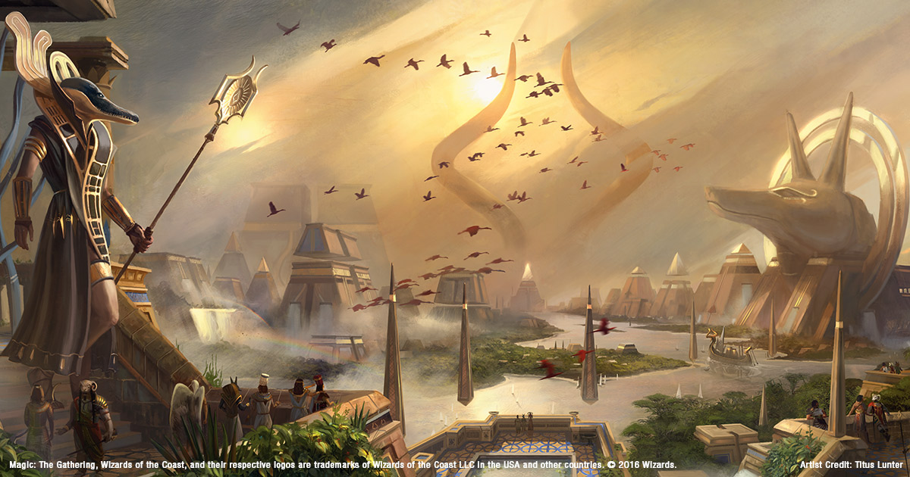
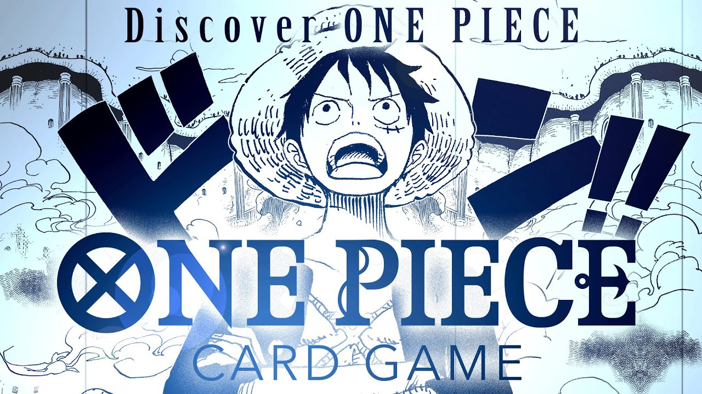

Anglerfish are much larger than the player's ship and pose a serious risk to exploring Dark Bramble. Their bio-luminescent lure strikingly resembles the glow of the portals within Dark Bramble and can easily be mistaken for one. When alerted they can move faster than the player's ship and are capable of swallowing it, instantly leading to certain death.
Ordinarily, cyclones start in a cluster at the South Pole, before adventuring all over the surface following unknown patterns, disappearing and reappearing after launching an island. Most of the cyclones rotate clockwise, generating upwards winds that fling objects through the atmosphere. However, one of the cyclones always rotates counter-clockwise, and pushes objects down instead of up, with enough force to bypass the deep water current and allow access into the Ocean Depths.
Traversing the planet's precarious remains is a challenging task, but despite the likelihood that a player will slip and fall into the black hole, the fact that White Hole Station lies very close to the black hole's exit point means that the planet's long falls are less dangerous and more inconvenient.